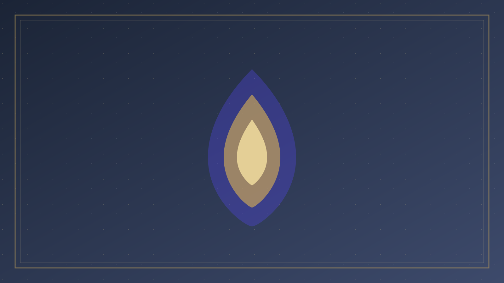

分題 04 / 07
聖靈的工作
五、聖靈的工作：叫人想起耶穌的話，榮耀基督
新約確實強調聖靈引導。否認這一點，是虧欠約翰福音與使徒行傳。但聖靈的工作在耶穌自己的應許裡，有清楚的方向，不是另立一套與福音無關的私訊系統。
「但保惠師，就是父因我的名所要差來的聖靈，他要將一切的事指教你們，並且要叫你們想起我對你們所說的一切話。」
— 約翰福音 14:26
「只等真理的聖靈來了，他要引導你們明白一切的真理……他要榮耀我，因為他要將受於我的告訴你們。」
— 約翰福音 16:13–14
「想起我對你們所說的一切話」「榮耀我」：聖靈的職事是基督中心的。祂不是來頒布與耶穌無關、又不得被教會檢驗的第二套正典。路加—使徒行傳裡，聖靈確實禁止、差遣、充滿（徒 13:2；16:6–7），但那引導服務於道（ὁ λόγος）向外邦推進，而不是把使徒的福音相對化。聖靈與聖道不是兩條互不統屬的軌道。
羅馬書 8:14–16 同樣常被讀成日常決策的內在導航：「凡被神的靈引導的，都是神的兒子。」「聖靈與我們的心同證我們是神的兒女。」上下文卻是兒子的名分、治死身體的惡行、在苦難中呼叫「阿爸，父」。同證的核心是身份與盼望，不是每週行程表。把「同證」窄化成「我心裡很平安所以這就是神旨」，既膨脹了經文，也忽略同一章對肉體心思的警戒（羅 8:5–8）。
承認聖靈今日仍工作，與堅持祂的工作必榮耀基督、必叫人活在已經賜下的話語裡，二者必須同時成立。抽掉任何一端，辨別都會歪。